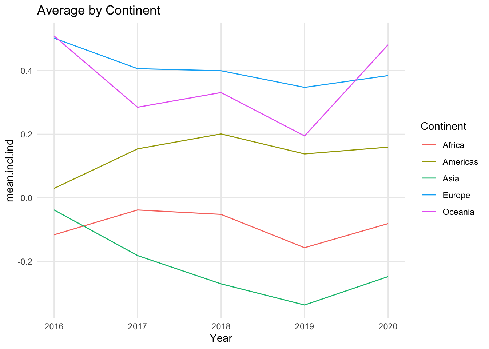
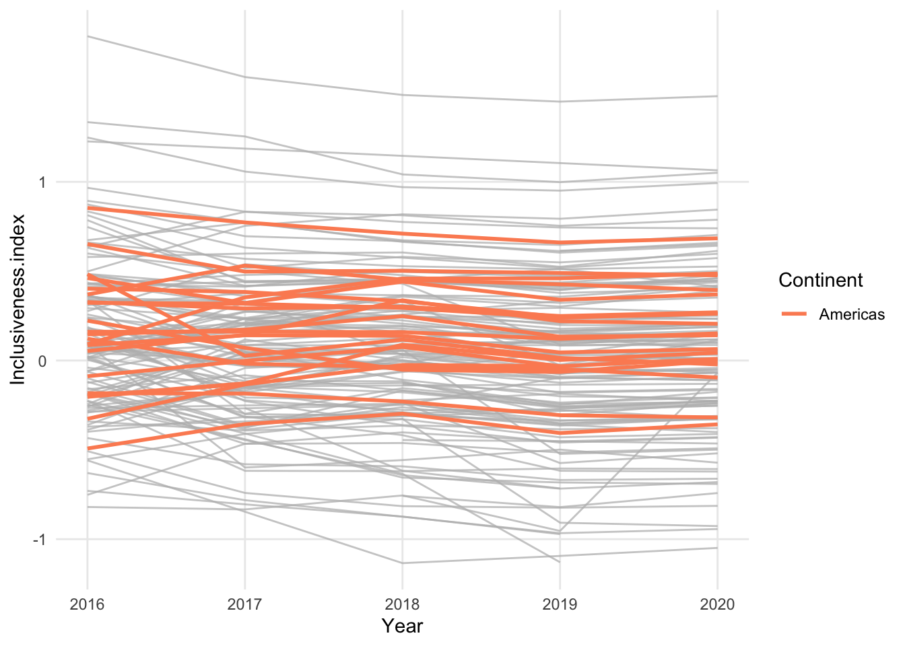
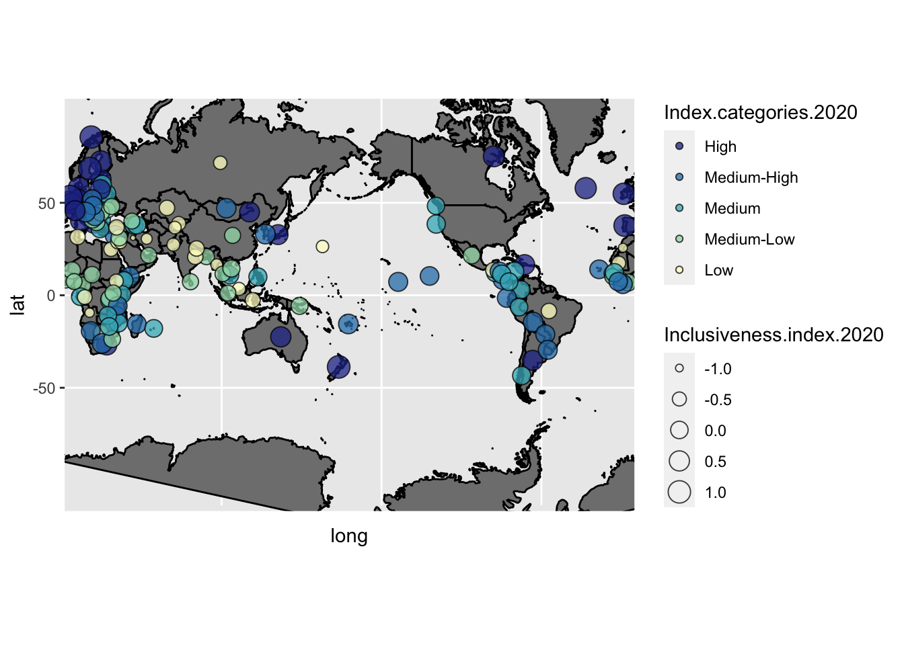
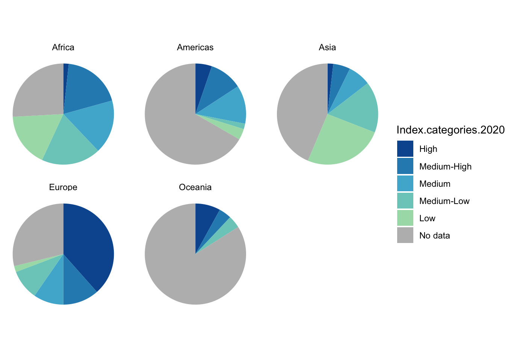
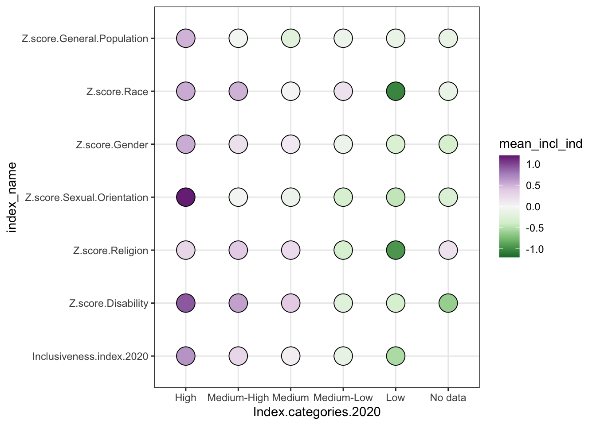
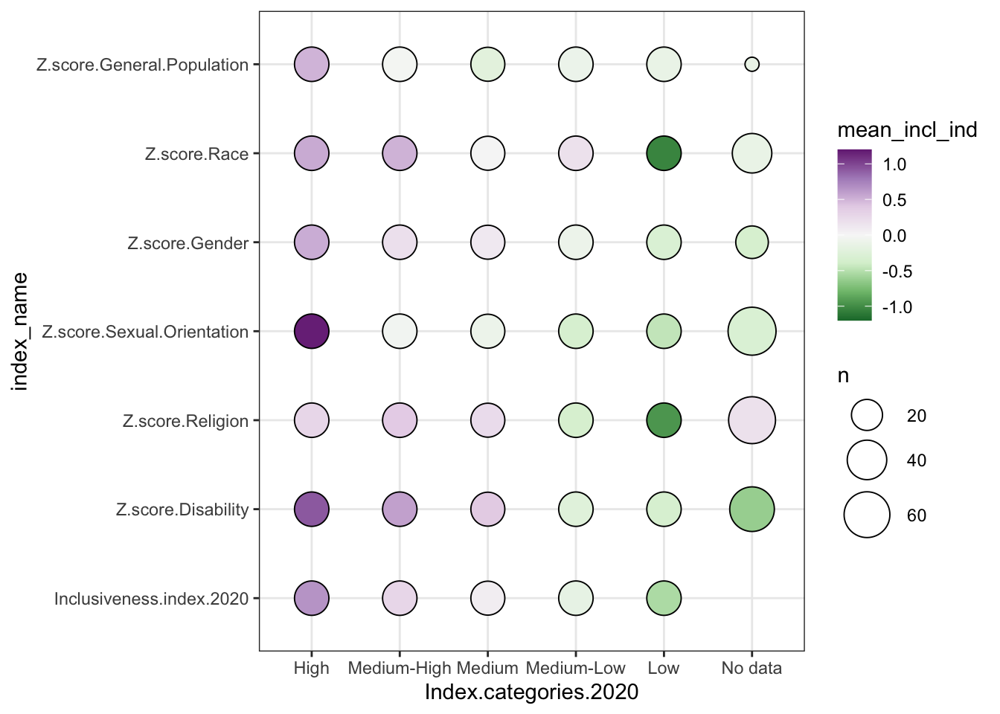

Chapter 1 Overview of common visualizations and how to read them
inclusiveness_index_annual %>%
drop_na(Inclusiveness.index) %>%
ggplot(aes(x = Year, y = Inclusiveness.index, color = Continent)) +
geom_jitter()
1.1 Bar Chart
bar chart / stacked bar / dot plot / dumbbell plot
inclusiveness_index_annual %>%
drop_na(Inclusiveness.index) %>%
group_by(Continent) %>%
summarize(mean_incl_ind = mean(Inclusiveness.index, na.rm = TRUE)) %>%
mutate(Continent = Continent %>% as_factor() %>% fct_reorder(mean_incl_ind, .desc = TRUE)) %>%
ggplot(mapping = aes(x = Continent, y = mean_incl_ind)) +
geom_col()
1.2 Scatter Plot
scatter plot / scatter plot with color / bubble chart / countour plot
inclusiveness_index %>%
drop_na(Z.score.Religion, Inclusiveness.index.2020) %>%
ggplot(aes(x = Z.score.Religion,
y = Inclusiveness.index.2020)) +
geom_point()
1.3 Line Chart
line chart / area chart
inclusiveness_index_annual %>%
group_by(Year, Continent) %>%
summarise(mean_incl_ind = mean(Inclusiveness.index, na.rm = TRUE)) %>%
dplyr::filter(Continent == "Europe") %>%
ggplot(aes(x = Year,
y = mean_incl_ind)) +
geom_line()## `summarise()` has grouped output by 'Year'. You can override using the `.groups` argument.
inclusiveness_index_annual %>%
group_by(Year, Continent) %>%
summarise(mean_incl_ind = mean(Inclusiveness.index, na.rm = TRUE)) %>%
ggplot(aes(x = Year,
y = mean_incl_ind,
color = Continent)) +
geom_line()## `summarise()` has grouped output by 'Year'. You can override using the `.groups` argument.
1.4 Pie Chart
pie chart / donut chart
# library(RColorBrewer)
# brewer.pal(5, "Blues")
inclusiveness_index %>%
#dplyr::filter(Continent == "Americas") %>%
ggplot(aes(y = "", fill = Index.categories.2020)) +
geom_bar(position=position_fill()) +
coord_polar(direction = -1) +
#scale_fill_brewer(type="seq", palette = 1, direction = -1) +
scale_fill_manual(values = c("#08519C","#3182BD","#6BAED6","#9ECAE1","#C6DBEF","#EEEEEE")) +
theme_void() +
facet_wrap(vars(Continent))
1.5 Heat Map
heat map / matrix / circles with color and size
inclusiveness_index %>%
pivot_longer(cols = c(Inclusiveness.index.2020, starts_with("Z")),
names_to = "index_name",
values_to = "index_values",
values_drop_na = TRUE) %>%
group_by(Index.categories.2020, index_name) %>%
summarise(mean_incl_ind = mean(index_values)) %>%
mutate(index_name = index_name %>%
as_factor() %>%
fct_relevel(c("Z.score.General.Population", "Z.score.Race", "Z.score.Gender",
"Z.score.Sexual.Orientation", "Z.score.Religion",
"Z.score.Disability", "Inclusiveness.index.2020")) %>%
fct_rev()) %>%
#View() %>%
ggplot(aes(y = index_name, x = Index.categories.2020, fill = mean_incl_ind)) +
geom_tile() +
scale_fill_distiller(type="div", palette = 3,
limits=c(-1.2,1.2),
direction = -1) +
theme_bw()## `summarise()` has grouped output by 'Index.categories.2020'. You can override using the `.groups` argument.## Warning: Unknown levels in `f`:
## Inclusiveness.index.2020
1.6 Histogram
histogram / density
inclusiveness_index %>%
drop_na(Inclusiveness.index.2020) %>%
ggplot(aes(x = Inclusiveness.index.2020)) +
geom_histogram()## `stat_bin()` using `bins = 30`. Pick better value
## with `binwidth`.
1.7 Box Plot
box plot / violin plot / bee swarm
ggplot(inclusiveness_index,
aes(group = Z.score.Disability,
y = Inclusiveness.index.2020)) +
geom_boxplot()## Warning: Removed 113 rows containing non-finite values
## (stat_boxplot).
1.8 Maps
choropleth / proportional symbol map
map_incl_ind <- inclusiveness_index %>%
mutate(Country = case_when(
Country == "Antigua and Barbuda" ~ "Antigua",
Country == "Bonaire, Saint Eustatius and Saba" ~ "Bonaire",
Country == "Cote d'Ivoire" ~ "Ivory Coast",
Country == "East Timor" ~ "Timor-Leste",
Country == "Palestina" ~ "Palestine",
Country == "Saint Kitts and Nevis" ~ "Saint Kitts",
Country == "Saint Vincent and the Grenadines" ~ "Saint Vincent",
Country == "Saint-Barthalemy" ~ "Saint Barthelemy",
Country == "Saint-Martin" ~ "Saint Martin",
Country == "Trinidad and Tobago" ~ "Trinidad",
Country == "United Kingdom" ~ "UK",
Country == "United States" ~ "USA",
Country == "Vatican City" ~ "Vatican",
TRUE ~ Country
)) %>%
bind_rows(
inclusiveness_index %>% dplyr::filter(
Country %in% c("Antigua and Barbuda", "Bonaire, Saint Eustatius and Saba",
"Saint Kitts and Nevis", "Saint Vincent and the Grenadines",
"Trinidad and Tobago")
) %>% mutate(Country = case_when(
Country == "Antigua and Barbuda" ~ "Barbuda",
Country == "Bonaire, Saint Eustatius and Saba" ~ "Sint Eustatius",
Country == "Saint Kitts and Nevis" ~ "Nevis",
Country == "Saint Vincent and the Grenadines" ~ "Grenadines",
Country == "Trinidad and Tobago" ~ "Tobago",
TRUE ~ Country
)
),
inclusiveness_index %>% dplyr::filter(
Country %in% c("Bonaire, Saint Eustatius and Saba")
) %>% mutate(Country = case_when(
Country == "Bonaire, Saint Eustatius and Saba" ~ "Saba",
TRUE ~ Country
)
)
)
map_incl_ind %>%
left_join(map_data("world2"), by = c("Country" = "region")) %>%
ggplot() +
geom_polygon(aes(x = long,
y = lat,
group=group,
fill=Inclusiveness.index.2020)) +
coord_map() +
scale_fill_distiller(type="div", palette = 3,
limits=c(-1.2,1.2),
direction = -1)
map_incl_ind %>%
drop_na(Inclusiveness.index.2020) %>%
left_join(
map_data("world2") %>%
group_by(region) %>%
summarise(x = mean(long),
y = mean(lat)),
by = c("Country" = "region")) %>%
ggplot() +
geom_polygon(
data = map_data("world2"),
aes(x = long,
y = lat,
group=group),
fill = "grey50",
color = "black") +
coord_map() +
geom_point(aes(x = x, y = y,
fill = Index.categories.2020,
size = Inclusiveness.index.2020),
shape = 21,
alpha = .75) +
scale_fill_brewer(palette = "YlGnBu", direction = -1)
1.9 Movies
library(ggplot2movies) # add to index if you use this instead
# Movies were selected for inclusion if they had a known length and had
# been rated by at least one imdb user.
movies <- moviesmovies %>%
pivot_longer(cols = c(Action, Animation, Comedy, Drama, Documentary, Romance, Short), names_to = "genre") %>%
mutate(value = as.logical(value)) %>%
dplyr::filter(value) %>%
mutate(genre = genre %>%
as_factor() %>%
fct_infreq) %>%
ggplot(aes(x=genre)) +
geom_bar()
ggplot(movies, aes(budget, rating)) +
geom_point()## Warning: Removed 53573 rows containing missing values
## (geom_point).
movies %>%
group_by(year) %>%
summarise(mean_budget = mean(budget, na.rm=T)) %>%
ggplot(aes(x=year, y=mean_budget)) +
geom_line()## Warning: Removed 10 row(s) containing missing values
## (geom_path).movies %>%
pivot_longer(cols = c(Action, Animation, Comedy, Drama, Documentary, Romance, Short), names_to = "genre") %>%
mutate(value = as.logical(value)) %>%
dplyr::filter(value) %>%
mutate(genre = genre %>%
as_factor() %>%
fct_infreq) %>%
ggplot(aes(y="", fill=genre)) +
geom_bar(position = position_fill()) +
coord_polar(direction = -1)
movies %>%
pivot_longer(cols = c(Action, Animation, Comedy, Drama, Documentary, Romance, Short), names_to = "genre") %>%
mutate(value = as.logical(value)) %>%
dplyr::filter(value, mpaa != "") %>%
mutate(genre = genre %>%
as_factor() %>%
fct_infreq) %>%
group_by(mpaa, genre) %>%
summarize(n = n(), mean_budget = mean(budget, na.rm=T)) %>%
ggplot(aes(x=mpaa, y=genre, fill = mean_budget)) +
geom_tile()## `summarise()` has grouped output by 'mpaa'. You can override using the `.groups` argument.
ggplot(movies, aes(x=rating)) +
geom_histogram()## `stat_bin()` using `bins = 30`. Pick better value
## with `binwidth`.
movies %>%
pivot_longer(cols = c(Action, Animation, Comedy, Drama, Documentary, Romance, Short), names_to = "genre") %>%
mutate(value = as.logical(value)) %>%
dplyr::filter(value) %>%
mutate(genre = genre %>%
as_factor() %>%
fct_infreq) %>%
ggplot(aes(x=genre, y=rating)) +
geom_boxplot()
(No maps, but maybe that’s okay)